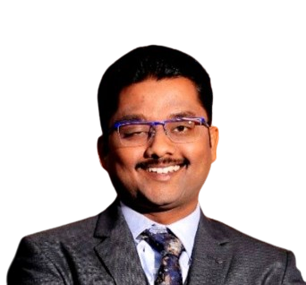

// IISc Mechanical Engineering · Bangalore
Large Eddy Simulation · Wind Energy · Atmospheric Turbulence · Machine Learning for Fluid Mechanics

// Principal Investigator
Assistant Professor in the Department of Mechanical Engineering at the Indian Institute of Science (IISc), Bangalore.
PhD from Johns Hopkins University. Research focuses on understanding and modeling atmospheric turbulence, leveraging Large Eddy Simulation (LES) and machine learning to improve wind energy systems and turbulence closure models.
Interests span turbulent flow physics, wind farm aerodynamics, wall-modeled LES, and data-driven approaches for turbulence modeling.
// What We Do
01 ——
High-fidelity LES of turbulent flows including channel flow, boundary layers, and complex terrain. Development of wall models and subgrid-scale closures.
02 ——
Physics of wind turbine wake dynamics — yaw-induced deflection, wind veer effects, counter-rotating vortex pairs, and wake superposition in wind farms.
03 ——
Optimizing wind farm layout and control strategies through physics-based wake modeling. Bridging high-fidelity simulation with engineering-scale tools.
04 ——
Machine learning methods for turbulence classification, subgrid-scale modeling, and wall modeling. Self-organizing maps, neural networks, and data-driven closures.
05 ——
Simulating and modeling the turbulent atmospheric boundary layer — including stability effects, Coriolis forcing, wind veer, and surface heterogeneity.
06 ——
LES of bypass and subcritical orderly transition. Selective wall-modeling conditioned on turbulence state to capture transition at reduced computational cost.
// Selected Works
// Open Positions
We are actively recruiting motivated researchers at all levels to work on turbulence physics, wind energy, and machine learning for fluid mechanics.
Strong background in fluid mechanics, applied mathematics, or computational science. Experience with CFD or ML is a plus.
OpenPhD in mechanical/aerospace engineering, applied physics, or related field. Independent research track record expected.
OpenIISc students interested in computational turbulence or wind energy research. Semester and summer projects available.
OpenSend a brief email with your CV, research interests, and why you want to join the lab. Applications are reviewed on a rolling basis.
Send Email